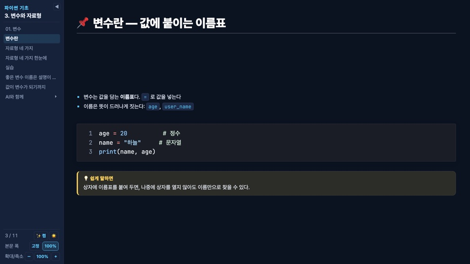

테마
hossam
강의흰 바탕 코딩 강의용 테마입니다. 왼쪽 목차 사이드바, 표지 · 간지 · 카드형 · 웹진형 · 인포그래픽 레이아웃, 콜아웃 · 프롬프트 · 출력 상자가 있습니다. 사이드바는 sidebar: true/false로 켜고 끕니다.



쓰는 법
1. 저장소 받기
테마 폴더가 든 이 저장소를 받습니다. 새 버전은 git pull로 받습니다.
git clone https://github.com/leekh4232/slidev-themes.git2. 경로로 지정
md 파일 프런트매터에 테마 폴더 경로를 적고, 우클릭 → Open with Slidev(또는 npx slidev slides.md)로 엽니다.
---
theme: ./slidev-themes/hossam
sidebar: true # 생략하면 켬
---예제 덱
lecture-example.md
파이썬 기초 3강. 콜아웃 · 프롬프트 · 출력 · 단계 목록과 사이드바.